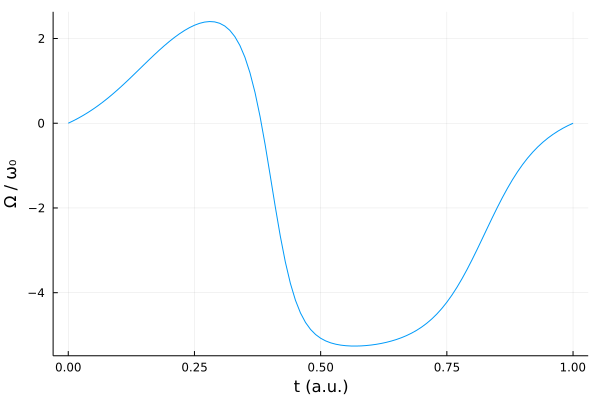
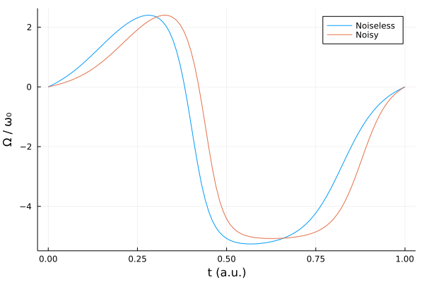

Noisy two-level system
The dynamics of open quantum systems can be described with a master equation
\[\dot{\rho} = -i[H, \rho] + \sum_k \gamma_k \big( J_k \rho J_k^\dagger - \frac{1}{2} J_k^\dagger J_k \rho - \frac{1}{2} \rho J_k^\dagger J_k \big),\]
where $J_k$ are jump operators and $\gamma_k$ corresponding jump rates. We again consider a simple two-level system Hamiltonian
\[H(t) = -\frac{\omega_0}{2}\sigma_z + \Omega(t)\sigma_x,\]
in a noisy setting by introducing relaxation through a jump operator $J_1 = \sigma_-$ and with rate $\gamma_1 = 0.01$.
using Sisyphus
using QuantumOptics
using Flux, DiffEqFlux
using Plots
using Random
using ProgressMeter
ProgressMeter.ijulia_behavior(:clear)n_neurons = 4
Random.seed!(0)
ann = FastChain(FastDense(1, n_neurons, tanh),
FastDense(n_neurons, n_neurons, tanh),
FastDense(n_neurons, n_neurons, tanh),
FastDense(n_neurons, 1))
θ = Vector{Float64}(initial_params(ann));
println("Number of parameters: ", length(θ))
Ω(params, t) = ann([t], params)[1]Number of parameters: 53Let's first consider our problem without the noise by minimizing the infidelity.
(t0, t1) = (0.0, 1.0)
cost = CostFunction((x, y) -> 1.0 - abs2(x'*y), p -> Ω(p, t0)^2 + Ω(p, t1)^2)
bs = SpinBasis(1//2)
trans = StateTransform(spindown(bs)=>spinup(bs))
H = Hamiltonian(-0.5*sigmaz(bs), [sigmax(bs)], Ω)
prob = QOCProblem(H, trans, (t0, t1), cost)
@time sol = solve(prob, θ, ADAM(0.05); maxiter=1000, abstol=1e-8, reltol=1e-8)[32mProgress: 100%|█████████████████████████████████████████| Time: 0:06:47[39m
[34m distance: 7.051431005766773e-8[39m
[34m constraints: 1.836876500130954e-7[39m
436.762505 seconds (367.22 M allocations: 38.639 GiB, 80.05% gc time, 13.77% compilation time)ts = t0:t1/100:t1
plot(ts, [Ω(sol.params, t) for t in ts])
plot!(xlabel="t (a.u.)", ylabel="Ω / ω₀", legend=false)
In order to solve the noisy problem with the existing machinery, we have to vectorize our master equation such that it takes on the form of a Schrödinger equation. We do this by applying the vectorization identity $\text{vec}(A B C) = (C^T \otimes A)\text{vec}(B)$ using vectorize methods.
Since our initial state is a pure state $|\psi\rangle = |\downarrow\rangle$, we can represent the overlap with the final mixed state using the formula $\langle\psi|\rho|\psi\rangle = \text{Tr}(|\psi\rangle\langle\psi|\rho)$. We can use another vectorization identity, $\text{Tr}(A^\dagger B) = \text{vec}(A)^\dagger\text{vec}(B)$, to get $\text{Tr}(|\psi\rangle\langle\psi|\rho) = \text{vec}(|\psi\rangle\langle\psi|)^\dagger\text{vec}(\rho)$. Then the infidelity can be measured with the cost function (x, y) -> 1.0 - real(x' * y). Note that this infidelity measure matches the one used above for pure states.
costv = CostFunction((x, y) -> 1.0 - real(x'*y), p -> Ω(p, t0)^2 + Ω(p, t1)^2)
transv = vectorize(trans)
J = [sigmam(bs)]
rates = [0.01]
Hv = vectorize(H, J, rates)Let us evolve the noisy system using the pulse optimized for the noiseless case.
tout, psit = master_dynamic((t0, t1), spindown(bs), H, sol.params, J, rates)
println("Infidelity: ", costv.distance(vectorize(spinup(bs)).data, vec(psit[end].data)))Infidelity: 0.0028828993080145526probv = QOCProblem(Hv, transv, (t0, t1), costv)
@time solv = solve(probv, sol.params, ADAM(0.05); maxiter=1000, abstol=1e-8, reltol=1e-8)[32mProgress: 100%|█████████████████████████████████████████| Time: 0:06:06[39m
[34m distance: 0.002472913289868317[39m
[34m constraints: 2.895772702259745e-7[39m
367.073293 seconds (331.51 M allocations: 45.108 GiB, 87.86% gc time, 0.38% compilation time)plot(ts, [Ω(sol.params, t) for t in ts], label="Noiseless")
plot!(ts, [Ω(solv.params, t) for t in ts], label="Noisy")
plot!(xlabel="t (a.u.)", ylabel="Ω / ω₀")
tout, psit = schroedinger_dynamic((t0, t1), spindown(bs), H, solv.params)
println("Noiseless infidelity: ", cost.distance(spinup(bs).data, psit[end].data))
tout, psit = master_dynamic((t0, t1), spindown(bs), H, solv.params, J, rates)
println("Noisy infidelity: ", costv.distance(vectorize(spinup(bs)).data, vec(psit[end].data)))Noiseless infidelity: 2.021542197638837e-6
Noisy infidelity: 0.002471508213857332